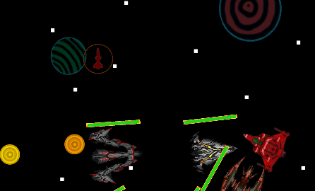

Tutorial de Gameplay
Naves
Quando o usuário iniciar uma nova partida, terá uma opção de selecionar entre naves diferentes (Apenas visual, não há diferença entre elas):

Interface do jogo
No início da fase, o usuário terá a visão desta interface:
Nela, é possível obter todas as informações necessárias durante a partida.
Na parte superior da interface, é possível visualizar a vida e
experiencia no canto superior esquerdo.
A pontuação é mostrada no canto superior direito.
No centro é possível ver um indicador da fase que o jogador está, e um
contador que define o tempo restante naquela fase.
Na parte inferior da interface, é possível as informações do jogador no
canto inferior esquerdo, como level, maximo de vida, velocidade e dano.
E no canto direito inferior é possível visualizar um mapa que mostra a
localização de inimigos próximos.
Quando os inimigos são eliminados, eles deixam no local uma orbe de experiência que o jogador deve obter para conseguir subir de nível e assim conseguir melhorias para sua nave.
Ao subir de nível, o usuário poderá escolher entre três melhorias aleatórias, que irão aumentar o poder de sua nave cada vez mais.
Durante a partida o jogador também encontrará algumas caixas espalhadas pela fase.
Ao destruí-las, ele poderá encontrar dois upgrades diferentes, além dos que são obtidos ao subir de nível.
Um deles é um simbolo de + que recupera vida perdida:
O outro é um símbolo de mísseis que dá ao usuário uma quantia de ataque especial para utiliar:
Após o temporizador da fase chegar ao fim, um chefe de fase aparecerá e tentará eliminar o jogador, a vida deste chefe estará no local do timer anteriormente.